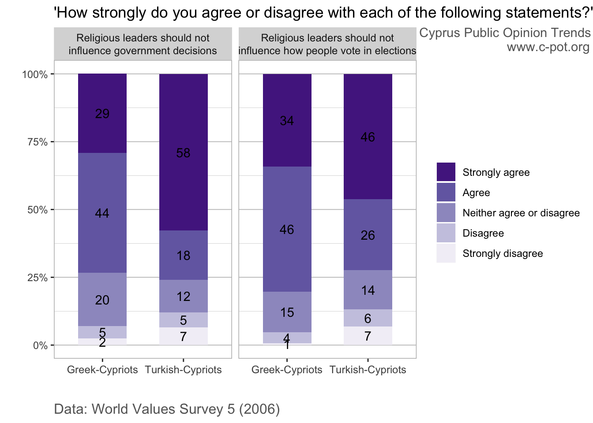

After examining religiosity in Cyprus, we now turn to people’s views on the role of religion in politics and public affairs.
• There is widespread belief in the separation of religion and government across both communities. However, non-trivial support for religious reasoning in public affairs also exists.
• The vast majority of Cypriots are clear in their conviction that religious leaders should not influence political decision-making and electoral processes.
• At the same time a sizable segment of the population feels that belief in God is a necessary trait for politicians to have and that religion should take precedence over science.
• In general, Turkish-Cypriots tend to express slightly more secular views than Greek-Cypriots.
Οι Απόψεις των Κυπρίων Σχετικά με τον Ρόλο της Θρησκείας στη Δημόσια Ζωή
Αφού εξετάσαμε την θρησκευτικότητα στην Κύπρο, στρεφόμαστε τώρα στις απόψεις σχετικά με το ρόλο της θρησκείας στην πολιτική και την δημόσια διοίκηση.
• Ο διαχωρισμός κράτους και θρησκείας τυχαίνει ευρείας υποστήριξης και στις δύο κοινότητες. Ωστόσο, υπάρχει επίσης αρκετή υποστήριξη για θρησκευτικούς συλλογισμούς στην δημόσια διοίκηση.
• Η συντριπτική πλειοψηφία των Κυπρίων πιστεύει ακράδαντα ότι οι θρησκευτικοί ηγέτες δεν πρέπει να επηρεάζουν τις πολιτικές αποφάσεις και τις εκλογικές διαδικασίες.
• Ταυτόχρονα, ένα σημαντικό μέρος του πληθυσμού πιστεύει ότι η πίστη στον Θεό είναι απαραίτητο χαρακτηριστικό των πολιτικών και ότι η θρησκεία πρέπει να υπερισχύει της επιστήμης.
• Γενικά, οι Τουρκοκύπριοι τείνουν να εκφράζουν ελαφρώς πιο κοσμικές απόψεις από τους Ελληνοκύπριους.
Kıbrıslıların dinin kamusal hayattaki yeri hakkında görüşleri
Kıbrıs’taki dini eğilimleri inceledikten sonra, şimdi de Kıbrıs halkının dinin siyaset ve kamusal hayattaki yeri hakkındaki görüşlerine bakıyoruz.
• Her iki toplumda da hâkim görüş din ve devlet işlerinin ayrı olması gerektiği yönünde. Bununla beraber, yönetişim ve kamusal hayatta dini muhakemeye yönelik azımsanmayacak düzeyde bir destek de mevcut.
• Kıbrıslıların çoğunluğu, dini liderlerin hükumet politikalarını etkilememesi gerektiğini yönünde oldukça net bir görüşe sahip.
• Aynı zamanda nüfusun büyük bir kısmı, Tanrı inancının siyasetçilerde bulunması gereken bir özellik olduğunu ve dinin bilimden daha önemli olduğunu düşünüyor.
• Genel olarak bakıldığında, Kıbrıs Türklerinin laik görüşler dile getirmeye Kıbrıs Rumlarından biraz daha eğilimli olduğu söylenebilir.
Our last blog post showed that religious values are prevalent in Cyprus and form an important part of people’s identity. How do Cypriots view the role of religion in society and public life though? To what extent does this religiosity translate to religious preferences in political processes?
This post examines Cypriots’ attitudes towards: (i) the role of religious leaders in governance, (ii) the political convictions of politicians, and (iii) whether religion should take precedence over science. The analysis uses World Values Survey and European Values Study data from 2006, 2008 and 2011. Even though these data are not particularly recent, they comprise perhaps the only publically available surveys of religious preferences among both Greek-Cypriots and Turkish-Cypriots, and can still provide important insights.
While there is widespread belief among Cypriots in the direct separation of religion and government, a significant segment of the population still espouses religious values in public affairs in an indirect way. Around three quarters of Cypriots across both communities feel that religious leaders should not influence government decisions and election processes, according to 2006 data. Only around 5-12% of respondents felt that religious leaders should exert such influence.

However, at the same time favourable attitudes for religious values in public leaders exist. A sizable segment of the population in both communities feels that belief in God is a necessary trait for politicians to have. 2008 surveys show that almost half of Greek-Cypriots felt that politicians who do not believe in God are unfit for public office, whereas a third of Turkish-Cypriots felt this way. Similarly, in 2011 around 40% of Greek-Cypriots and 30% of Turkish-Cypriots said that religion should take precedence over science when the two conflict.
Overall, Turkish-Cypriots tend to express slightly more secular preferences than Greek-Cypriots, which can be expected given the lower levels of religiosity that Turkish-Cypriots tend to report. The significance of religion in many Cypriots’ identity is reflected in the non-trivial support for leadership with religious values, and for the precedence of religion over science. This may explain the significant support for public policy preferences that favor religious reasoning, as seen for instance in the initial rejection of restrictions on gatherings due to COVID-19 by churches and some Greek-Cypriot church-goers.
Data sources
World Values Survey: WVS 5, WVS 6
European Values Study: EVS 4
References
Cyprus Mail. (2020). Coronavirus: Police investigating defiant Morphou bishop for holding mass. Available here.